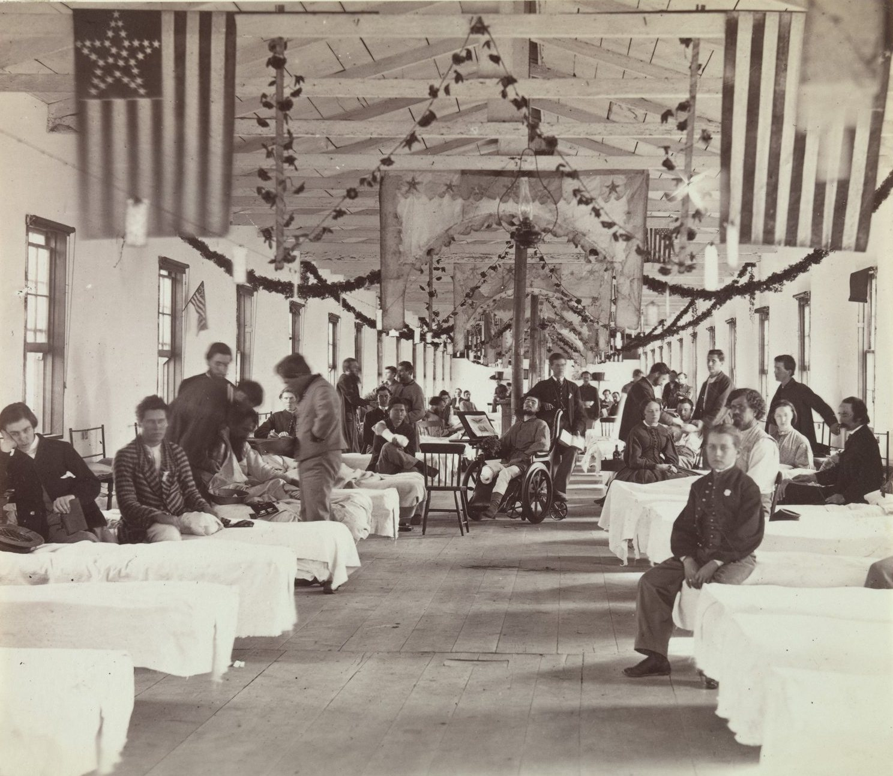
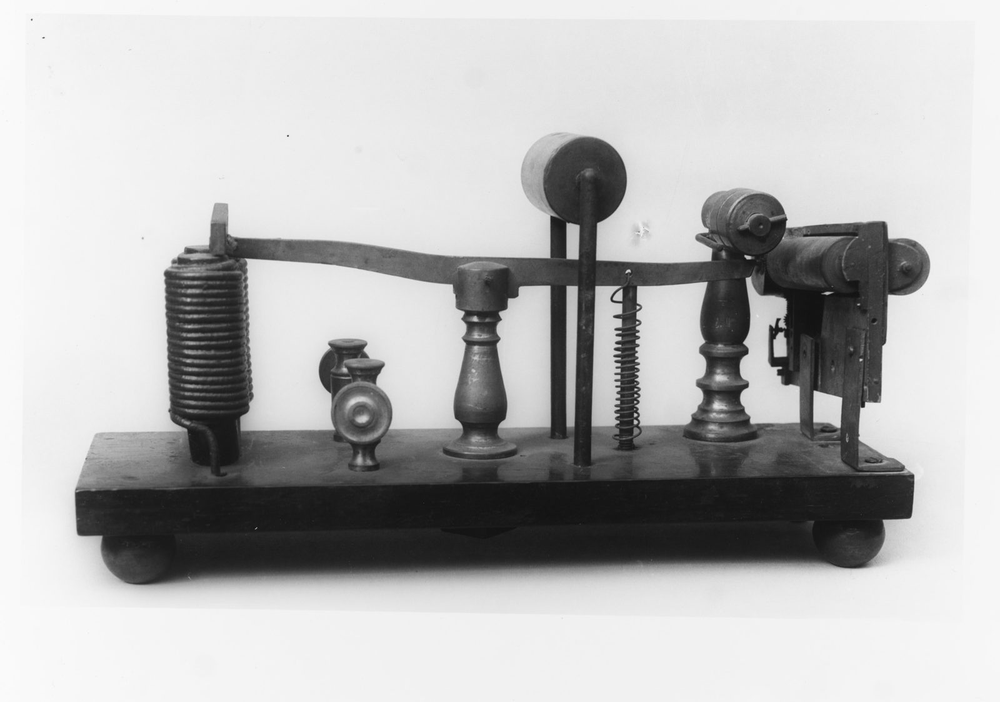
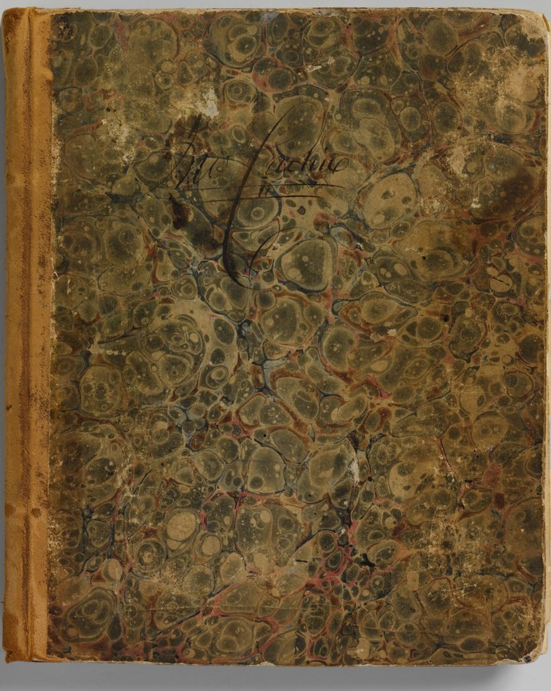
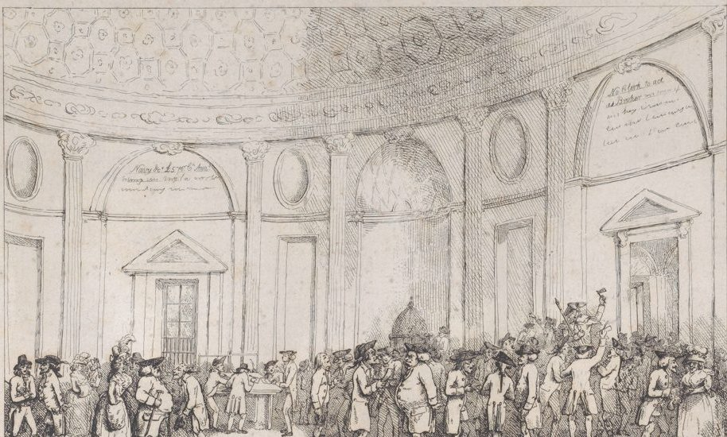
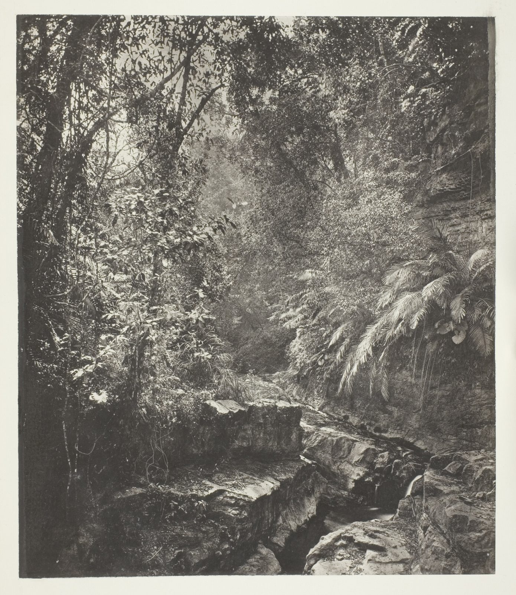

- 理賠立案 自動
- 解析診斷書 自動
- 派件 處理中
開放銀行、金融檢查與政府 API 規範的要求，digiRunner 已有對應功能，專案不必從零設計合規架構。
「昕力資訊實現三階段開放銀行規範」
「針對金融檢查，完善 API 管理」
「符合國家發展委員會【共通性應用程式介面規範】。」

「…處理核心銀行系統或過時大型機的資料轉換及通訊機制變更…」
銀行與保險公司導入 API 管理平台時，開放銀行與金融檢查的要求已經對應好。
看金融業方案政府單位建置 API 管理平台時，共通性規範與惡意行為防護已經內建。
看政府與公部門方案三則案例都是金融保險的日常作業，每一則都有可以引用的成果。



數位轉型（DigiLism）：digiRunner API 管理平台
核心系統與大型主機透過 API 接進來，AI 模型也走同一道 Gateway。「整合 MCP 協定與 AI Gateway 架構，讓 AI 模型安全串接企業 API、資料與業務流程」
gadoDIDO 無密碼身分驗證
「FIDO2 無密碼 零信任身分驗證」
gadoScout AI 異常偵測系統
「利用機器學習模型分析日誌並檢測異常，能快速識別入侵與攻擊」
DigiLism：接上核心銀行系統與大型主機
「以微服務架構的 DigiLism 專門協助處理核心銀行系統或過時大型機的資料轉換及通訊機制變更，可代替企業服務匯流排（ESB）」
OrientAI 只部署在企業端，資料的掌控權在企業手上。Agent 的權限、影子 AI 與 Token 用量都有管控；搭配群聯 aiDAPTIV，地端架構離線也能運行。
「結合群聯 aiDAPTIV 獨家記憶體擴充技術，突破算力與容量限制，地端架構確保離線仍可穩定運行」
先做 AI 導入
情境分析
再提出解決方案
搭配建議
接著做
效益評估
導入中做
模型評估、微調
昕力自己研發產品，也負責導入規劃、模型設定、建置與應用模組設計，決策者不必在產品原廠和導入廠商之間協調。
「昕力資訊提供完整的導入規劃、模型設定、建置與應用模組設計服務」
上方四個階段是 SysTalk.ai 的 AI 導入順序。
成立年份、海外子公司、資安認證與雲端夥伴關係，是評估長期合作風險的資料。

「台北總部 新加坡 越南 日本 新竹專案管理中心 台中專案管理中心 台南開發中心 高雄開發中心」
想直接聯絡也可以：